Kosing
Dependiendo mucho de tu estilo de juego, hay varias opciones que pueden llegar a adaptarse a tí. Sólo ten en cuenta que se considera que una criatura puede o no ser anklebitter a partir de Tier 3 para abajo.
Tier 1
Flipli
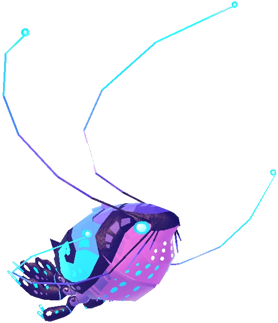
Flipli tiene un bloqueo de sangrado y congelamiento. En la parte defensiva, pone veneno y parálisis. Cuenta con la habilidad Culpa, la cual podría salvarte en más de una ocasión.
En la parte de habilidades, Flipli cuenta con Destello Deslumbrante, Impulso, y Aferrarse. En la parte pasiva, cuenta con La Unión Hace la Fuerza.
Ver datos aparte
Salud: 1650
Daño: 60
Bite Cooldown: 0.5
Peso: 1900
Lithumbra
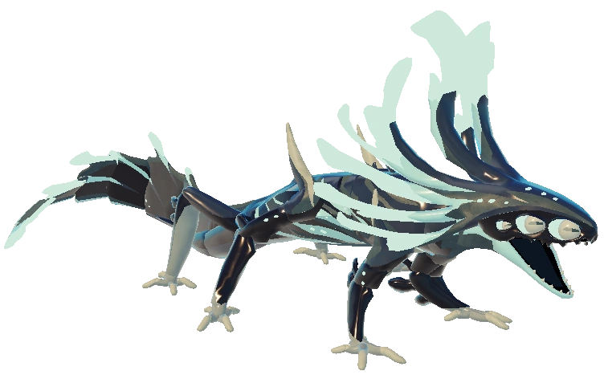
Lithumbra cuenta con un bloqueo de sangrado y necropoison. En la parte defensiva, coloca enfermedad. Por ataque, coloca enfermedad, necropoison, y veneno.
En la parte de habilidades, Lithumbra cuenta con Mal Presagio, Marca de Lich, Saltar, y Trampa de Espinas. En la parte pasiva, cuenta con La unión Hace la Fuerza, Estómago de Hierro, Nadador Ágil, y Escalador
Ver datos aparte
Salud: 1750
Daño: 90
Bite Cooldown: 0.7
Peso: 1350
Minawii
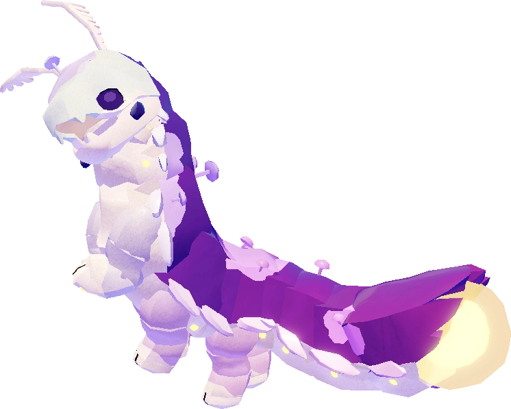
Minawii cuenta con un único bloqueo, sangrado. En la parte defensiva, coloca necropoison y veneno. Cuenta con la habilidad Culpa.
En la parte de habilidades, Minawii cuenta con Emboscada, Madriguera, Impulso, Saltar, y Aferrarse. En la parte pasiva, cuenta con Nadador Ágil, Escalador y Ladrón de Huevos
Ver datos aparte
Salud: 950
Daño: 60
Bite Cooldown: 0.5
Peso: 750
Pentagloss
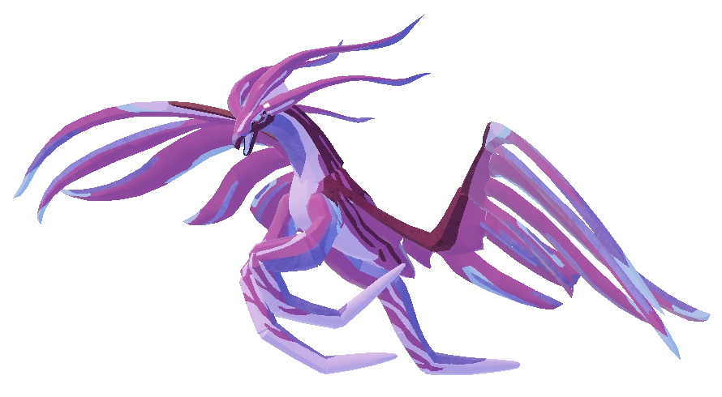
Pentagloss cuenta con un bloqueo de sangrado, congelamiento, necropoison, y veneno. En la parte defensiva, coloca corrosión. Por ataque, coloca corrosión y congelación.
En la parte de habilidades, Pentagloss cuenta con Emboscada, Área de Somnolencia, Volar, Planear, y Bombardero de Sombras. En la parte pasiva, cuenta con Nadador Ágil, Escalador, Helado, Observador Ávido, Recuperación Rápida, Alas Sónicas, y Stubborn Stacker.
Ver datos apartes
Salud: 2000
Daño: 45
Bite Cooldown: 0.4
Peso: 900
Tier 2
Adharcaiin
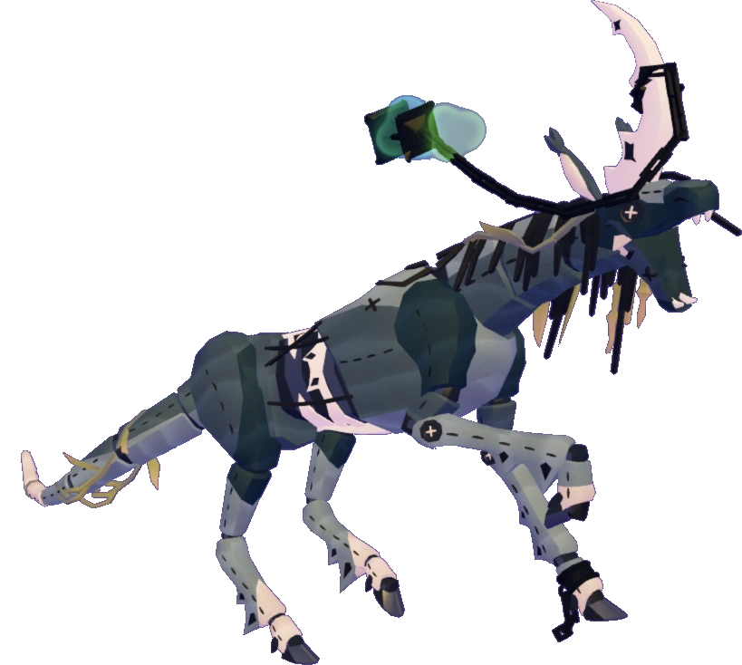
Adharcaiin cuenta con un bloqueo de sangrado, herida, veneno, y radiación. Por ataque, coloca únicamente sangrado.
En la parte de habilidades, Adharcaiin cuenta con Emboscada, Madriguera, Impulso, Saltar, Maldición del Cazador, y Furia Desenfrenada. En la parte pasiva, cuenta con Nadador Ágil, Berserker, Primer Golpe, Estómago de Hierro, e Inquebrantable.
Ver datos aparte
Salud: 100
Daño: 250
Bite Cooldown: 0.6
Peso: 1250
Arrainoa
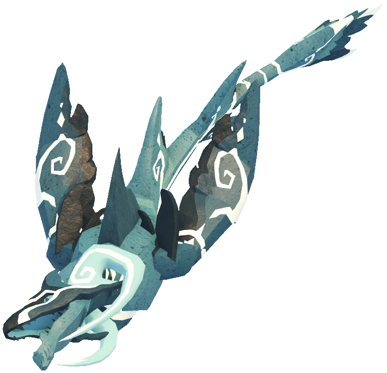
Arrainoa cuenta únicamente con un bloqueo de sangrado. Por ataque, coloca únicamente sangrado.
En la parte de habilidades, Arrainoa cuenta con Emboscada, Adrenalina, Impulso, y Agarrar. En la parte pasiva, cuenta únicamente con dientes serrados.
Ver datos aparte
Salud: 4000
Daño: 400
Bite Cooldown: 1
Peso: 2800
Idrabark
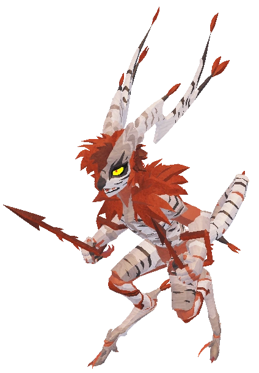
Idrabark cuenta con un bloqueo de sangrado, y quemaduras. Por ataque, coloca sangrado, alas desmenuzadas, y herida.
En la parte de habilidades, Idrabark cuenta con Emboscada, Saltar, Aferrarse, y Trampa de Espinas. En la parte pasiva, cuenta con Ladrón de Huevos, Primer Golpe, Observador Ávido, Raider, Cazador Silencioso, y La Unión Hace la Fuerza.
Ver datos aparte
Salud: 1150
Daño: 170
Bite Cooldown: 0.6
Peso: 1200
Orneep
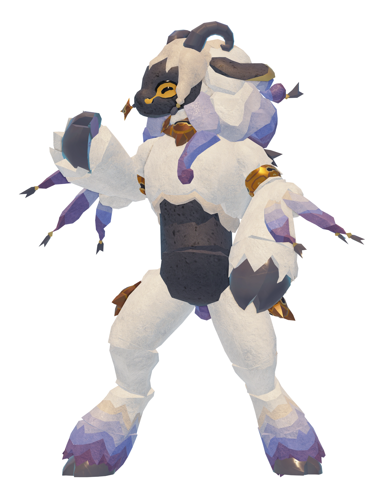
Orneep cuenta con un bloqueo de sangrado, congelación, necropoison, y veneno. Por ataque, coloca únicamente herida.
En la parte de habilidades, Orneep cuenta con Emboscada, Divination, Saltar, y Resentimiento Negativo. En la parte pasiva, cuenta con Carga (Power), Helado, Observador Ávido, Raider, Caída Lenta, y Voluntad de Vivir.
Ver datos aparte
Salud: 3250
Daño: 320
Bite Cooldown: 1.2
Peso: 1300
Pernirex
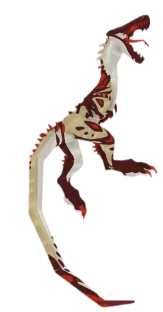
Pernirex cuenta con únicamente un bloqueo de sangrado. Por ataque, coloca sangrado, y alas desmenuzadas.
En la parte de habilidades, Pernirex cuenta con Emboscada, Madriguera, Saltar, y Aferrarse. En la parte pasiva, cuenta con Ladrón de Huevos, Recuperación Rápida, Dientes Serrados, y La Unión Hace la Fuerza.
Ver datos aparte
Salud: 1900
Daño: 130
Bite Cooldown: 0.6
Peso: 1600
Zokzis
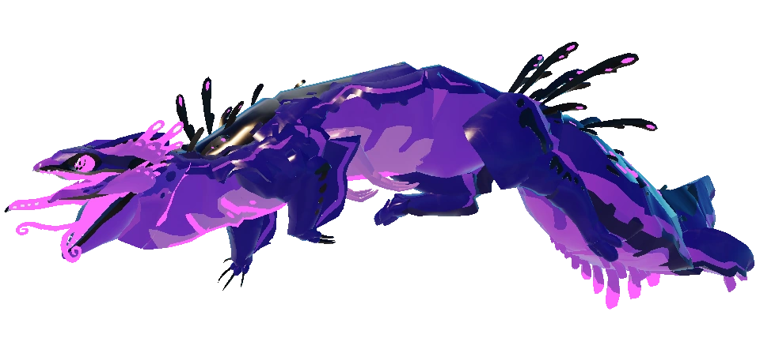
Zokzis cuenta con un bloqueo de quemadura, herida, necropoison, veneno, y parálisis. Cuenta con Dientes Pegajosos. Por ataque, coloca enfermedad, y necropoison.
En la parte de habilidades, Zokzis cuenta con Emboscada, Madriguera, Impulso, Saltar, Bombardero de Sombras, y Rensentimiento. En la parte pasiva, cuenta con Nadador Ágil, Escalador, Estómago de hierro, y Rastro Tóxico.
Ver datos aparte
Salud: 2200
Daño: 120
Bite Cooldown: 0.6
Peso: 1800
Tier 3
Bolatra
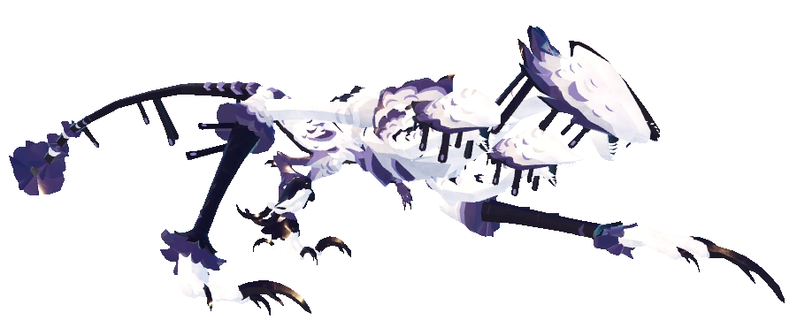
Bolatra cuenta con un bloqueo de sangrado, quemadura, enfermedad, necropoison, veneno y radiación. En la parte defensiva, coloca enfermedad, necropoison, y veneno. Por ataque, coloca corrosión.
En la parte de habilidades, Bolatra cuenta con Emboscada, Área de veneno, y Tótem. En la parte pasiva, cuenta con Escalador, Estómago de Hierro, Recuperación Rápida, y La Unión Hace la Fuerza.
Ver datos aparte
Salud: 3000
Daño: 185
Bite Cooldown: 0.8
Peso: 3000
Dunklaestus
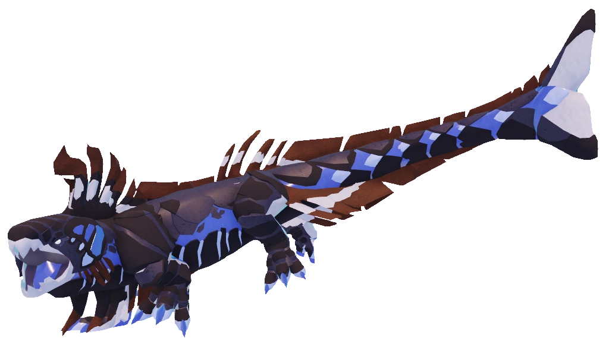
Dunklaestus cuenta con un bloqueo de sangrado, y herida. Por ataque, coloca sangrado, y herida.
En la parte de habilidades, Dunklaestus cuenta con Emboscada, Impulso, Agarrar, Fortificar, y Resentimiento. En la parte pasiva, cuenta con Nadador Ágil, Glotón, Estómago de Hierro, y Dientes Serrados.
Ver datos aparte
Salud: 3000
Daño: 450
Bite Cooldown: 1
Peso: 3500
Eskarlor
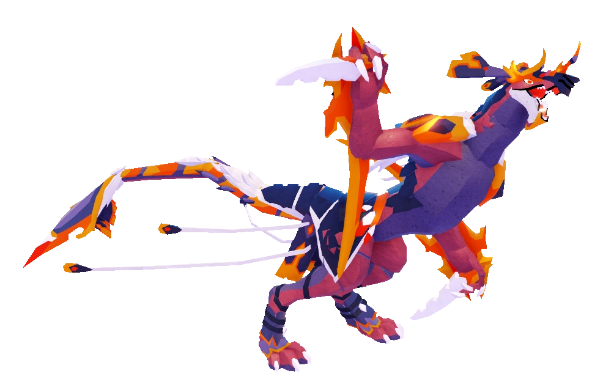
Eskarlor cuenta con un bloqueo de sangrado, herida, y veneno. Por ataque, coloca sangrado, alas desmenuzadas y herida.
En la parte de habilidades, Eskarlor cuenta con Emboscada, Saltar, y Reflejar. En la parte pasiva, cuenta únicamente con Obervador Ávido.
Ver datos aparte
Salud: 2900
Daño: 275
Bite Cooldown: 0.8
Peso: 3000
Garra Warden

Garra Warden cuenta con un bloqueo de sangrado, quemadura, necropoison, veneno y radiación. Cuenta con Resistencia a los Alientos, y Resistencia de los Wardens. En la parte defensiva, coloca únicamente sangrado. Por ataque, coloca sangrado, corrosión, alas desmenuzadas, y enfermedad.
En la parte de habilidades, Garra Warden cuenta con Emboscada, Saltar, Aliento de Enfermedad, y Furia de los Wardens. En la parte pasiva, cuenta únicamente con Escalador.
Ver datos aparte
Salud: 3500
Daño: 10
Bite Cooldown: 0.3
Peso: 3050
Gobbatlin
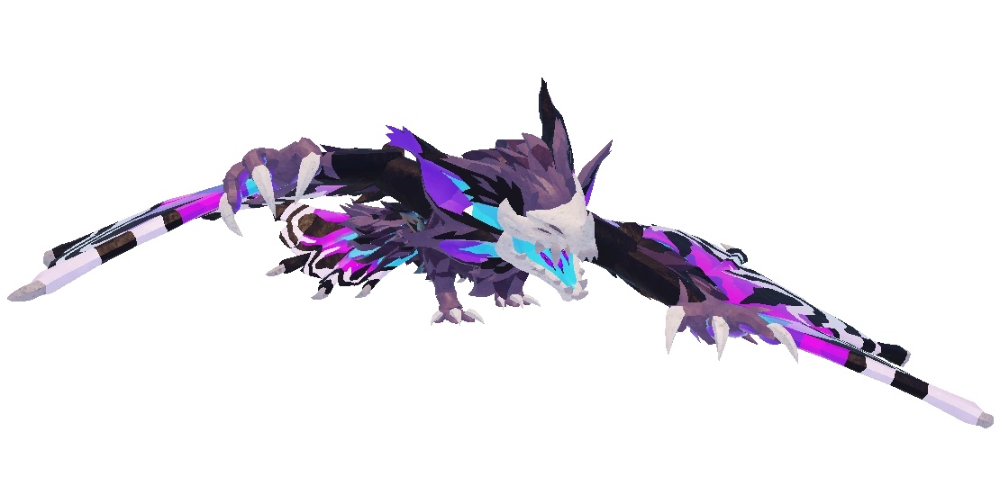
Gobbatlin cuenta con un bloqueo de sangrado, enfermedad, necropoison, y veneno. Por ataque, coloca únicamente sangrado.
En la parte de habilidades, Gobbatlin cuenta con Destello Deslumbrante, Volar, Planear, Aferrarse, Sanguijuela de Vida, y Bomba de Yola. En la parte pasiva, cuenta con Escalador, Helado, Estómago de Hierro, Dientes Serrados, y Cazador Silencioso.
Ver datos aparte
Salud: 2600
Daño: 220
Bite Cooldown: 0.9
Peso: 2200
Khilutatra
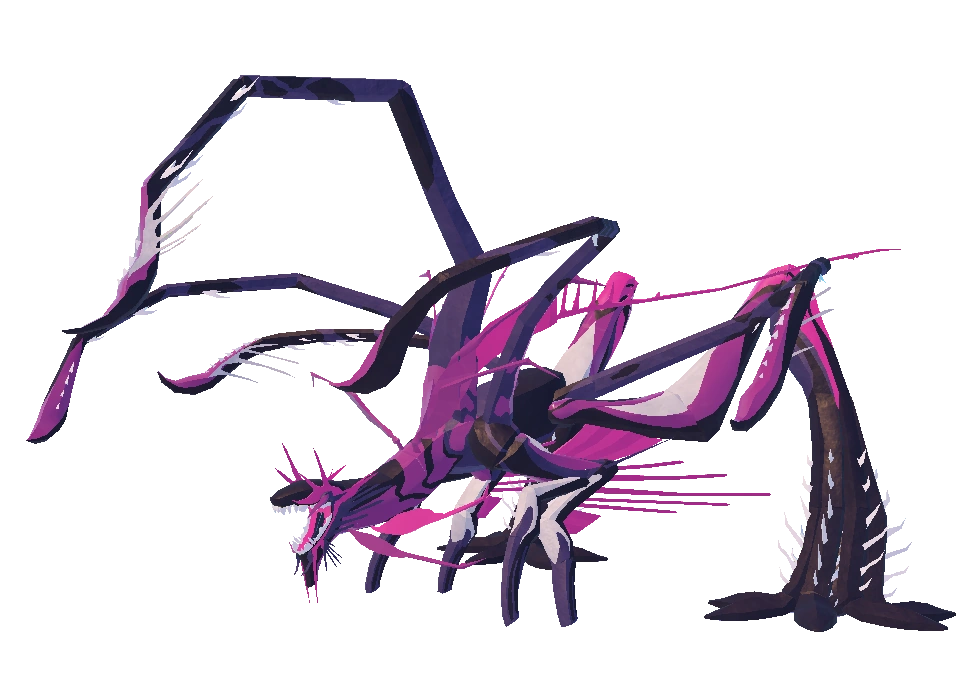
Khilutatra cuenta con un bloqueo de sangrado, quemadura, necropoison, y veneno. Por ataque, coloca corrosión, y enfermedad.
En la parte de habilidades, Khilutatra cuenta con Emboscada, Provocar Miedo, Saltar, Aliento de Miasma, y Bombardero de Sombras. En la parte pasiva, cuenta con Nadador Ágil, Ladrón de Huevos, Estómago de Hierro, y Raider.
Ver datos aparte
Salud: 3500
Daño: 120
Bite Cooldown: 0.4
Peso: 3000
Lissiceous
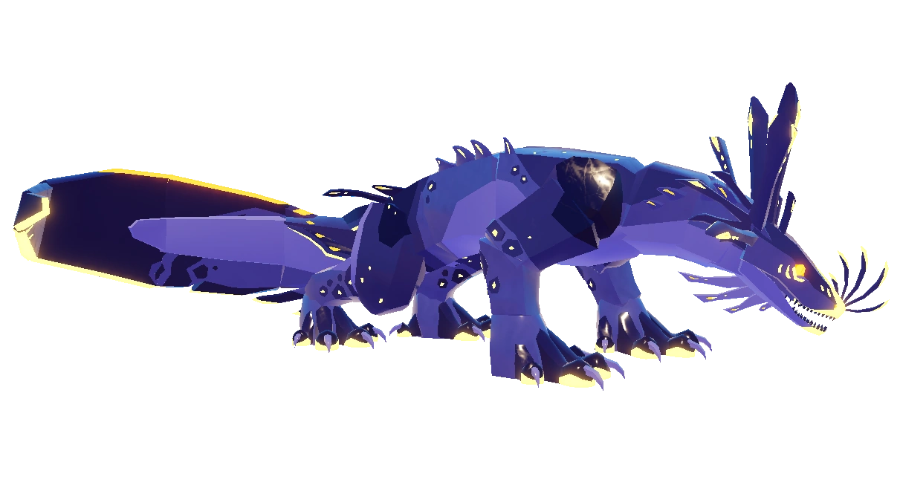
Lissiceous cuenta con un bloqueo de sangrado, y veneno. En la parte defensiva, coloca únicamente veneno. Por ataque, coloca sangrado, alas desmenuzadas y veneno.
En la parte de habilidades, Lissiceous cuenta con Emboscada, Imppulso, Saltar, y Destello Deslumbrante. En la parte pasiva, cuenta con Nadador Ágil, Escalador, y Primer Golpe.
Ver datos aparte
Salud: 2400
Daño: 250
Bite Cooldown: 0.8
Peso: 2200
Xenolif
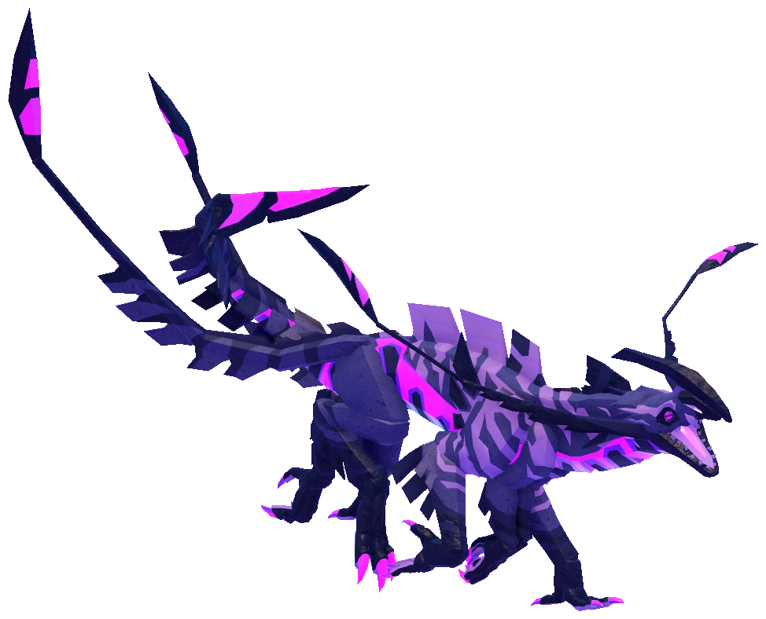
Xenolif cuenta con un bloqueo de sangrado, quemadura, veneno, y radiación. Por ataque, coloca corrosión, herida, alas desmenuzadas, veneno, radiación.
En la parte de habilidadees, Xenolif cuenta con Emboscada, y Aura de Corrosión. En la parte pasiva, cuenta con Escalador, Ladrón de Huevos, Estómago de Hierro, Observador Ávido, Raider, y La Unión Hace la Fuerza.
Ver datos aparte
Salud: 2550
Daño: 230
Bite Cooldown: 0.8
Peso: 2050
Tier 4
Aleicuda
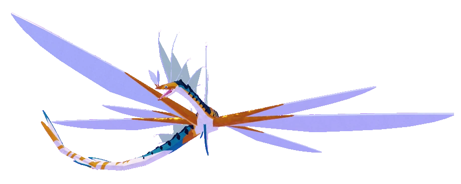
Aleicuda cuenta con un bloqueo de sangrado, herida, y veneno.Por ataque, coloca únicamente sangrado.
En la parte de habilidades, Aleicuda cuenta con Emboscada, Impulso, Área de Escape, Agarrar, y Aliento de Arena. En la parte pasiva, cuenta con Primer Golpe, Dientes Serrados, La Unión Hace la Fuerza, y Voluntad de Vivir.
Ver datos aparte
Salud: 7500
Daño: 265
Bite Cooldown: 0.8
Peso: 7000
Anutill
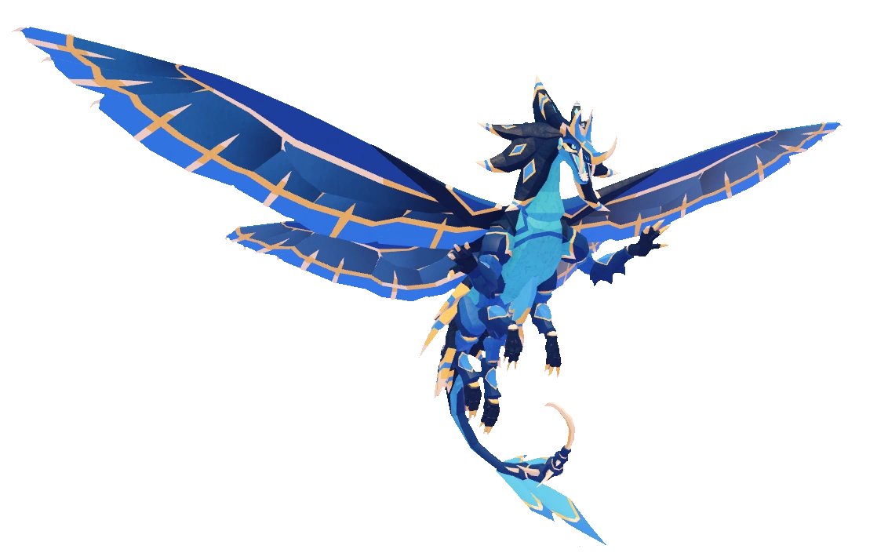
Anutill cuenta con un bloqueo de sangrado. Por ataque, coloca quemadura, y veneno.
En la parte de habilidades, Anutill cuenta con Emboscada, Destello Deslumbrante, Impulso, Volar, Planear, y Mal Presagio. En la parte pasiva, cuenta con Nadador Ágil, Buceador, y Alas Sónicas.
Ver datos aparte
Salud: 3800
Daño: 200
Bite Cooldown: 0.8
Peso: 3000
Arkmetta
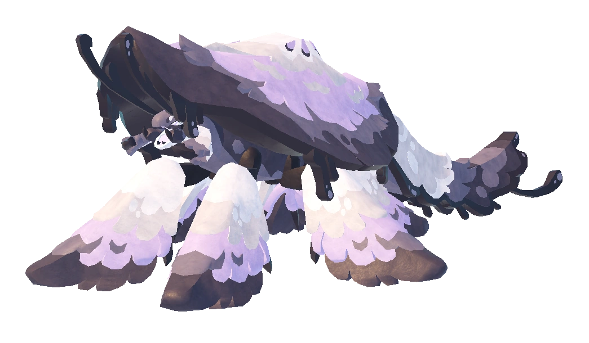
Arkmetta cuenta con un bloqueo de sangrado, quemadura, enfermedad, congelación, veneno y radiación. En la parte defensiva, coloca únicamente veneno.
En la parte de habilidades, Arkmetta cuenta con Área de Somnolencia, Área de Veneno, Trampa Tóxica, y Aliento de Veneno. En la parte pasiva, cuenta con Escalador, Hunker, Estómago de Hierro, y Rastro Tóxico.
Ver datos aparte
Salud: 6500
Daño: 225
Bite Cooldown: 0.8
Peso: 5250
Eiroca
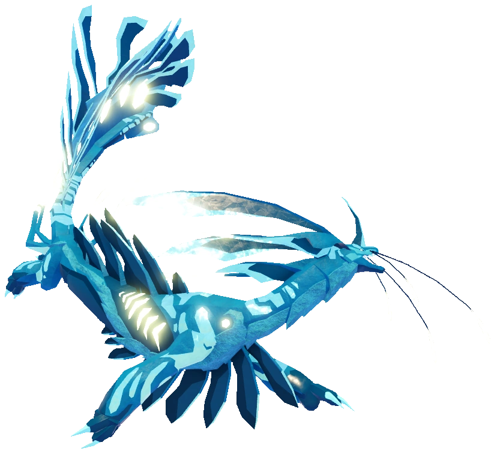
Eiroca cuenta con un bloqueo de radiación, y sangrado.
En la parte de habilidades, Eiroca cuenta con Impulso, Agarrar, y Robo de Velocidad. En la parte pasiva, cuenta únicamente con Recuperación Rápida.
Ver datos aparte
Salud: 5300
Daño: 300
Bite Cooldown: 0.6
Peso: 5000
Fabráashé
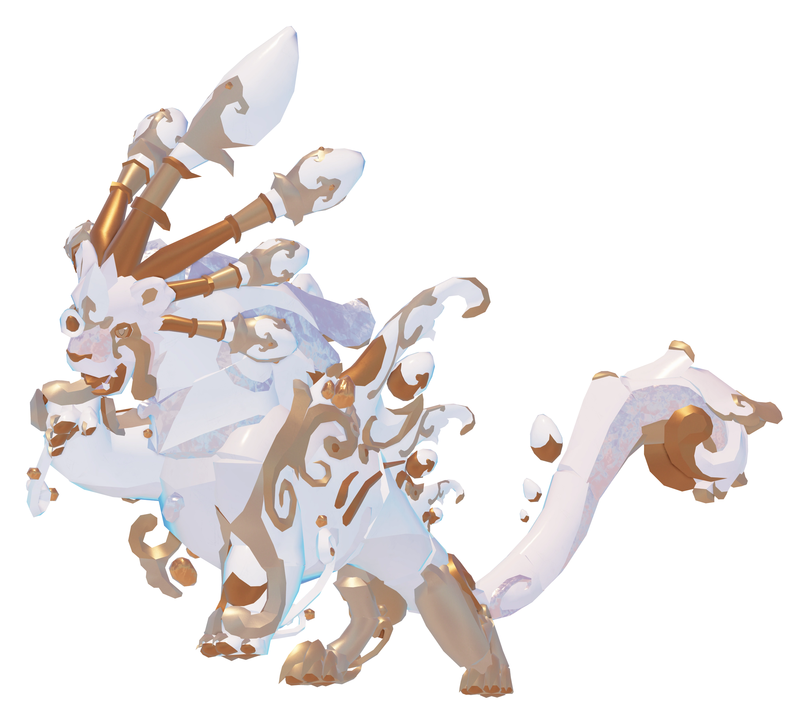
Fabráashé cuenta con un bloqueo de herida, y sangrado. Por ataque, coloca sangrado, y herida.
En la parte de habilidades, Fabráashé cuenta con Saltar, Destello Deslumbrante, Agarrar, y Maldición del Cazador. En la parte pasiva, cuenta con Nadador Ágil, Vigilante de Crías, y Ladrón de Huevos.
Ver datos aparte
Salud: 3500
Daño: 500
Bite Cooldown: 0.8
Peso: 3350
Polymonstrum
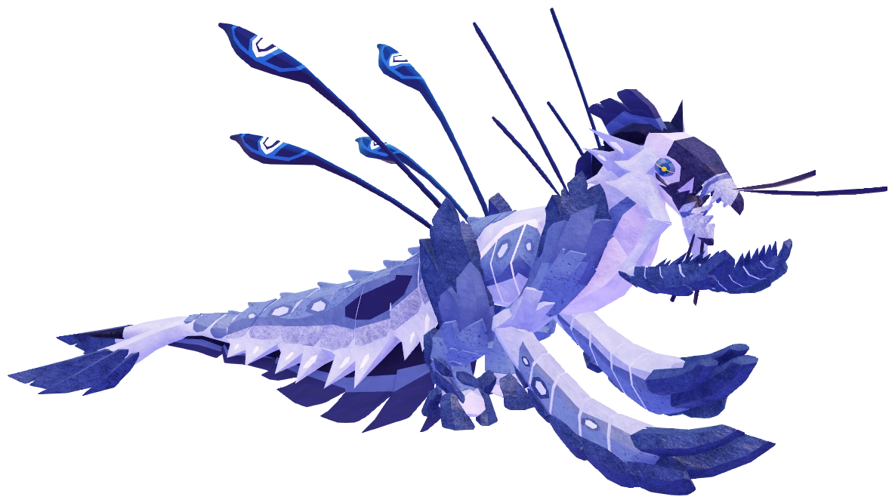
Polymonstrum cuenta con un bloqueo de sangrado, y herida. Por ataque, coloca únicamente herida.
En la parte de habilidades, Polymonstrum cuenta con Impulso, y Resentimiento. En la parte pasiva, cuenta con Nadador Ágil, y Helado.
Ver datos aparte
Salud: 4600
Daño: 600
Bite Cooldown: 1.1
Peso: 4700
Therimorse
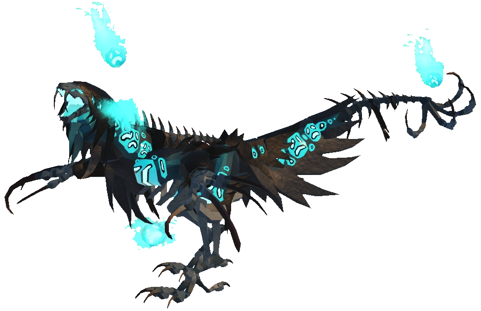
Therimorse cuenta con un bloqueo de herida, necropoison, y sangrado. Por ataque, coloca sangrado, alas desmenuzadas, y herida.
En la parte de habilidades, Therimorse cuenta con Emboscada, Impulso, Adrenalina, Mal Presagio. En la parte pasiva, cuenta con Nadador Ágil, Estómago de Hierro, y Cazador Silencioso.
Ver datos aparte
Salud: 4000
Daño: 365
Bite Cooldown: 0.6
Peso: 4000
Whispthera
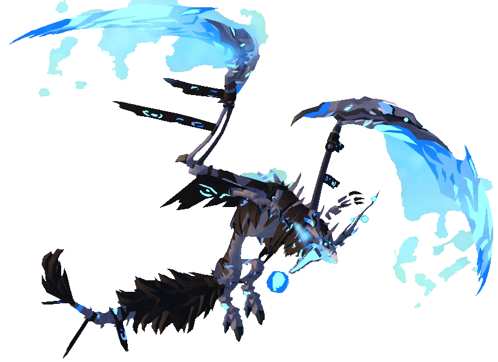
Whispthera cuenta con un bloqueo de sangrado, y congelación. Por ataque, coloca necropoison, alas desmenuzadas, y sangrado.
En la parte de habilidades, Whispthera cuenta con Emboscada, Saltar, Vuelo, y Sanguijuela de Vida. En la parte pasiva, cuenta únicamente con Estómago de Hierro.
Ver datos aparte
Salud: 4250
Daño: 650
Bite Cooldown: 1.5
Peso: 5000
Tier 5
Ahri'Tahmuk

Ahri'Tahmuk cuenta con un bloqueo de sangrado, quemadura, y necropoison. Por ataque, coloca quemadura, y veneno
En la parte de habilidades, Ahri'Tahmuk cuenta con Emboscada, Volar, Planear, Agarrar, y Aliento Solar.
Ver datos aparte
Salud: 4250
Daño: 325
Bite Cooldown: 1
Peso: 4350
Ardor Warden

Ardor Warden cuenta con un bloqueo de sangrado, quemadura, necropoison, veneno, y radiación. Cuenta con Resistencia a los Alientos, y Resistencia de los Wardens. Por ataque, coloca sangrado, y alas desmenuzadas.
En la parte de habilidades, Ardor Warden cuenta con Emboscada, Enlace de Daño, y Furia de los Wardens. En la parte pasiva, cuenta con Nadador Ágil, Berserker, Carga (Gore), y Primer Golpe.
Ver datos aparte
Salud: 6000
Daño: 100
Bite Cooldown: 1.1
Peso: 7100
Empiterium
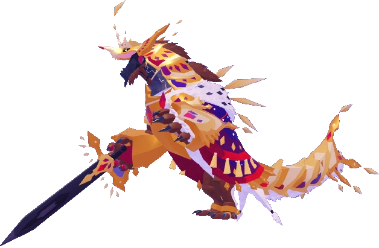
Empiterium cuenta con un único bloqueo de sangrado. Por ataque, coloca sangrado, alas desmenuzadas, y herida.
En la parte de habilidades, Empiterium cuenta con Emboscada, y Maldición del Cazador. En la parte pasiva, cuenta únicamente con Dientes Serrados.
Ver datos aparte
Salud: 7250
Daño: 450
Bite Cooldown: 1
Peso: 15750
Hygos

Hygos cuenta con un bloqueo de sangrado, congelación, y veneno. Por ataque, coloca sangrado, y veneno.
En la parte de habilidades, Hygos cuenta únicamente con Emboscada. En la parte pasiva, cuenta con Ciclo de Día/Noche, Estómago de Hierro, y Dientes Serrados.
Ver datos aparte
Salud: 6000
Daño: 650
Bite Cooldown: 1.2
Peso: 20000
Jabblebashhe
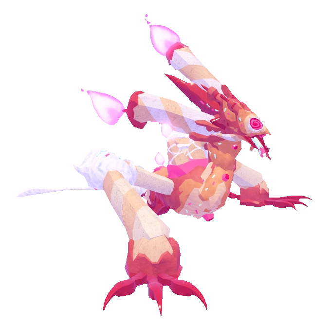
Jabblebashhe cuenta con un bloqueo de sangrado, quemadura, y congelación. En la parte defensiva, coloca únicamente quemadura. Por ataque, coloca únicamente sangrado.
En la parte de habilidades, Jabblebashhe cuenta únicamente con Emboscada.
Ver datos aparte
Salud: 5500
Daño: 500
Bite Cooldown: 0.6
Peso: 17500
Behemoth
Caldonterrus
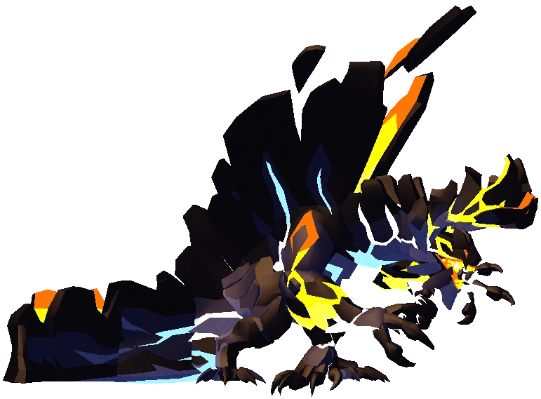
Caldonterrus cuenta con un bloqueo de sangrado, quemadura, y radiación. En la parte defensiva, coloca únicamente quemadura. Por ataque, coloca únicamente alas desmuenuzadas.
En la parte de habilidades, Caldonterrus cuenta con Aliento de Fuego, y Furia Desenfrenada. En la parte pasiva, cuenta con Estómago de Hierro, y Volcánico.
Ver datos aparte
Salud: 14500
Daño: 300
Bite Cooldown: 1.2
Peso: 50000
Geortharoc
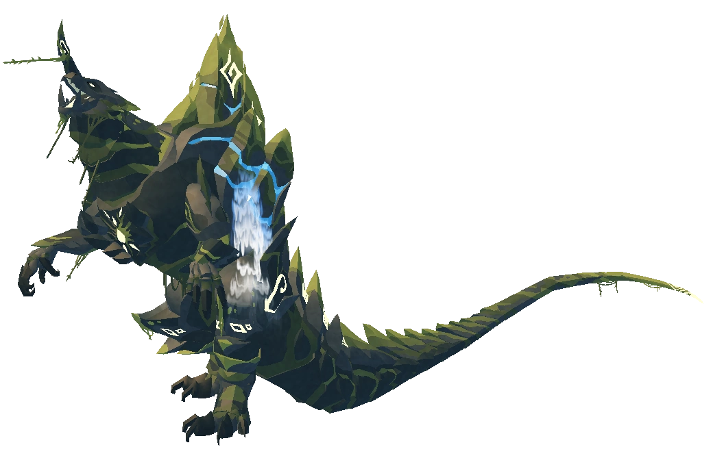
Geortharoc cuenta con un bloqueo de sangrado, quemadura, congelación, herida, necropoison, veneno, y radiación. En la parte defensiva, coloca únicamente herida.
En la parte de habilidades, Geortharoc cuenta con Aliento de Nube, Restauración de Agua en Área, y Látigo Cola. En la parte pasiva, cuenta con Nadador Ágil, y Carga Launch.
Ver datos aparte
Salud: 17000
Daño: 375
Bite Cooldown: 1.2
Peso: 50000
Korathos
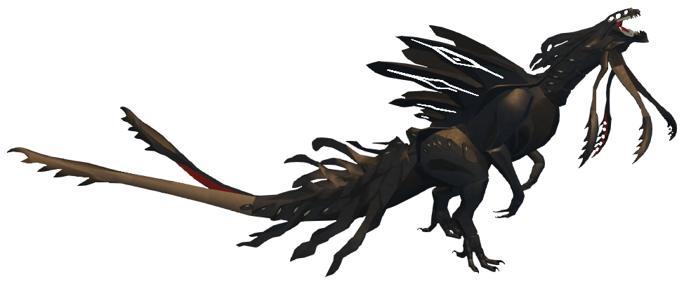
Korathos cuenta con un bloqueo de sangrado, quemadura, veneno, y radiación. Por ataque, coloca veneno, y alas desmenuzadas.
En la parte de habilidades, Korathos cuenta con Aliento de Miasma, Látigo Cola, y Sanguijuela de Vida. En la parte pasiva, cuenta únicamente con Estómago de Hierro.
Ver datos aparte
Salud: 10750
Daño: 450
Bite Cooldown: 1
Peso: 50000
Kretapex
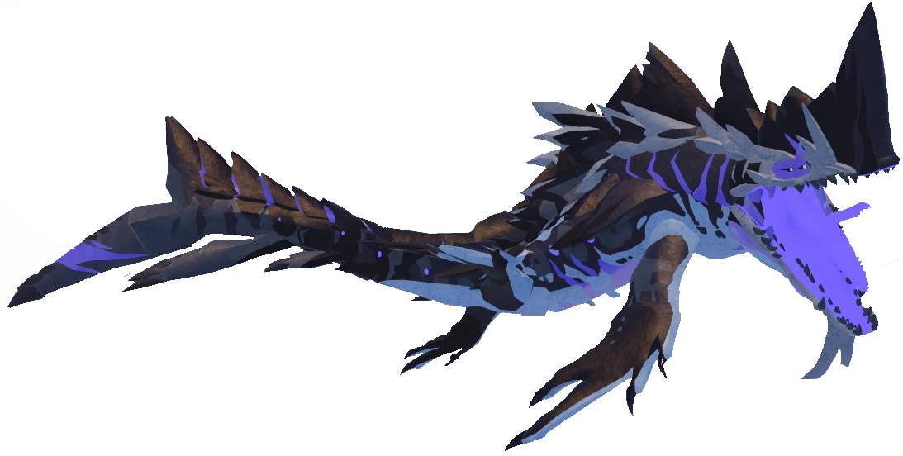
Kretapex cuenta con un bloqueo de sangrado, congelación, herida, veneno, y radiación. En la parte defensiva, coloca únicamente herida. Por ataque, coloca únicamente sangrado.
En la parte de habilidades, Kretapex cuenta con Emboscada, Agarrar, Impulso, Marca de Lich, y Desaparecer. En la parte pasiva, cuenta con Helado, Dientes Serrados, y Glotón.
Ver datos aparte
Salud: 10250
Daño: 350
Bite Cooldown: 1.3
Peso: 30000
Healing
Dependiendo mucho de tu estilo de juego, hay varias opciones que pueden llegar a adaptarse a tí.
Tier 1
Ani
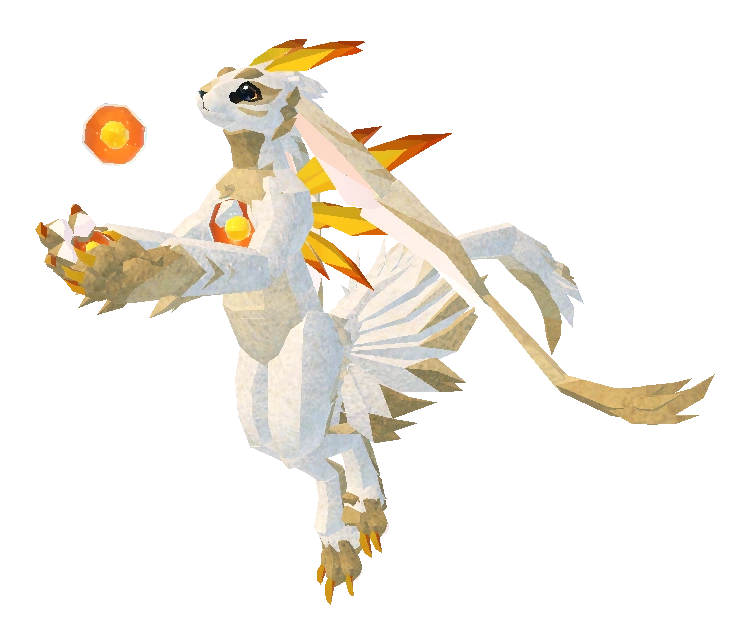
Ani cuenta con un bloqueo de necropoison, y radiación. En la parte defensiva, coloca únicamente quemadura. Cuenta con la habilidad Culpa.
En la parte de habilidades, Ani cuenta con Cazador Sanador, Aliento de Curación, Saltar, y Robo de Velocidad. En la parte pasiva, cuenta con Observador Ávido, Recuperación Rápida, y Aterrizaje Suave.
Ver datos aparte
Salud: 700
Daño: 50
Curación: 65
Bite Cooldown: 0.4
Peso: 850
Brequewk
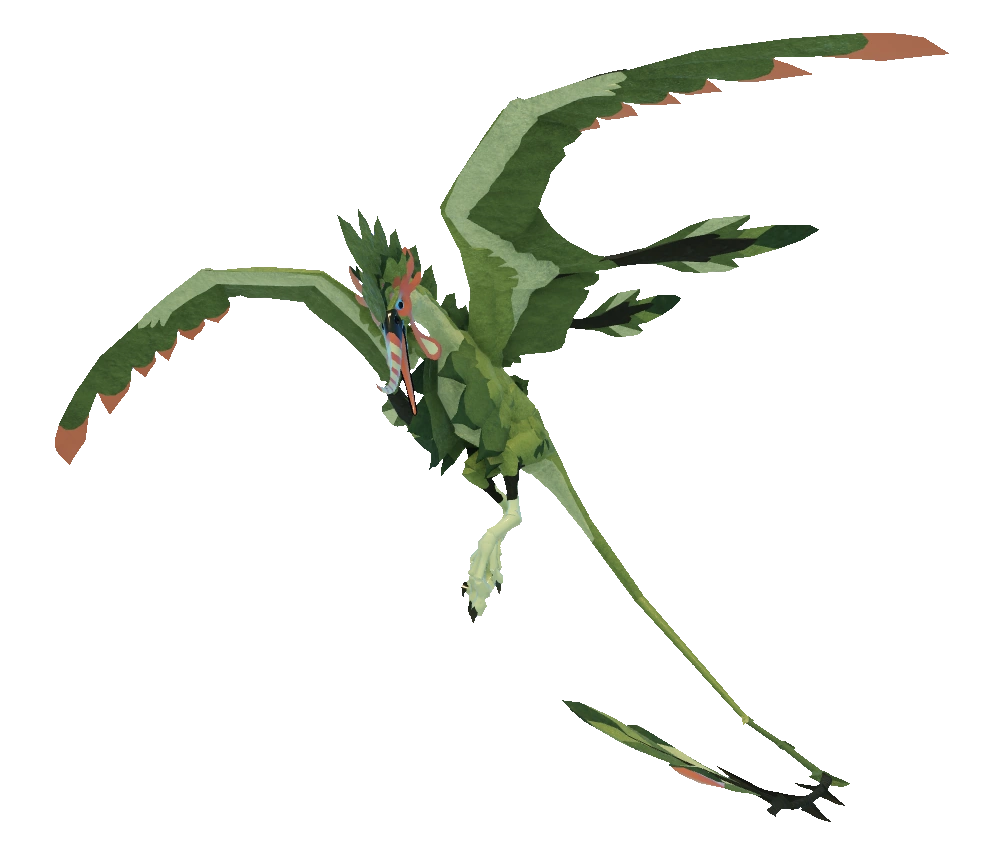
En la parte defensiva, coloca únicamente veneno.
En la parte de habilidades, Brequewk cuenta con Emboscada, Cazador Sanador, Aliento de Flores, Volar, Planear, y Madriguera. En la parte pasiva, cuenta con Observador Ávido, Alas Sónicas, y Sanador de Manada..
Ver datos aparte
Salud: 1500
Daño: 65
Curación: 60
Bite Cooldown: 0.5
Peso: 850
Moonelle
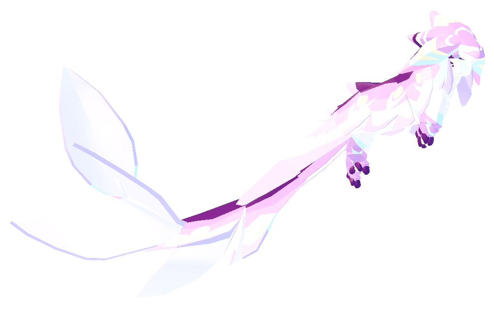
Moonelle cuenta con un único bloqueo de sangrado.
En la parte de habilidades, Moonelle cuenta con Madriguera, Impulso, Saltar, Cazador Sanador, y Área de Escape. En la parte pasiva, cuenta con Observador Ávido, y Nadador Ágil.
Ver datos aparte
Salud: 1400
Daño: 65
Curación: 80
Bite Cooldown: 0.5
Peso: 1050
Tier 2
Flickaflie
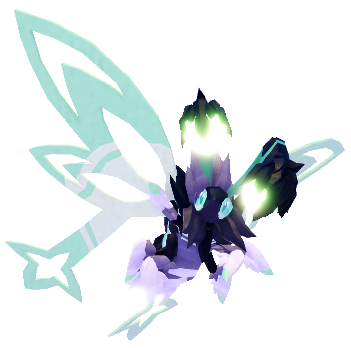
Flickaflie cuenta con un único bloqueo de sangrado. Cuenta con la habilidad Culpa.
En la parte de habilidades, Flickaflie cuenta con Cazador Sanador, Aliento de Nube, Volar, y Planear. En la parte pasiva, cuenta con Observador Ávido, Sanador de Manada, Raider, y Escalador.
Ver datos aparte
Salud: 1250
Daño: 50
Curación: 65
Bite Cooldown: 0.6
Peso: 1550
Mobuushiy
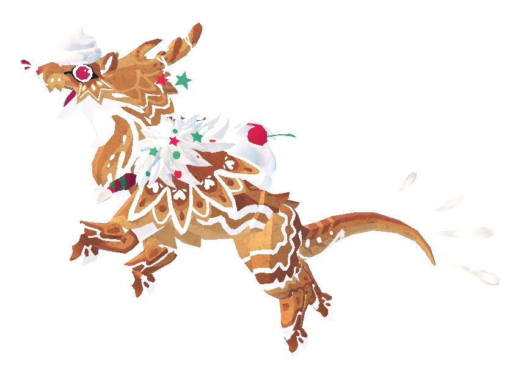
Mobuushiy cuenta con un bloqueo de sangrado, y congelación.
En la parte de habilidades, Mobuushiy cuenta con Cazador Sanador, Madriguera, Saltar, Trampa de Hielo, y Trampa Pegajosa. En la parte pasiva, cuenta con Vigilante de Crías, y Helado.
Ver datos aparte
Salud: 1350
Daño: 110
Curación: 50
Bite Cooldown: 0.5
Peso: 1500
Tier 3
Valkyrie
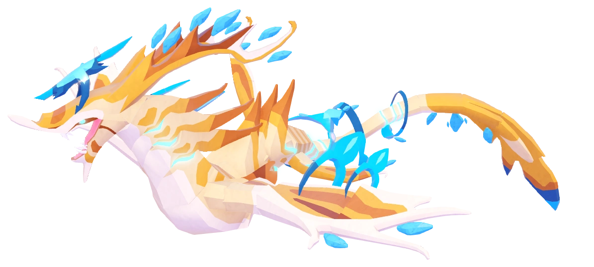
Valkyrie cuenta con un único bloqueo de sangrado.
En la parte de habilidades, Valkyrie cuenta con Cazador Sanador, Volar, Planear, y Robo de Velocidad. En la parte pasiva, cuenta con Buceador, Nadador Ágil, y Observador Ávido.
Ver datos aparte
Salud: 3750
Daño: 120
Curación: 100
Bite Cooldown: 0.8
Peso: 3350
Zarrax
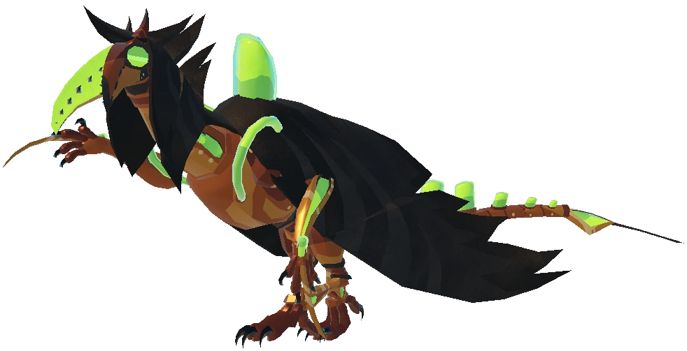
Zarrax cuenta con un bloqueo de enfermedad, necropoison, veneno, y radiación. Por ataque, coloca enfermedad, alas desmenuzadas, necropoison, y veneno.
En la parte de habilidades, Zarrax cuenta con Cazador Sanador, Emboscada, y Saltar. En la parte pasiva, cuenta con Estómago de Hierro, y Observador Ávido.
Ver datos aparte
Salud: 3250
Daño: 150
Curación: 140
Bite Cooldown: 0.8
Peso: 3000
Tier 4
Coniferon
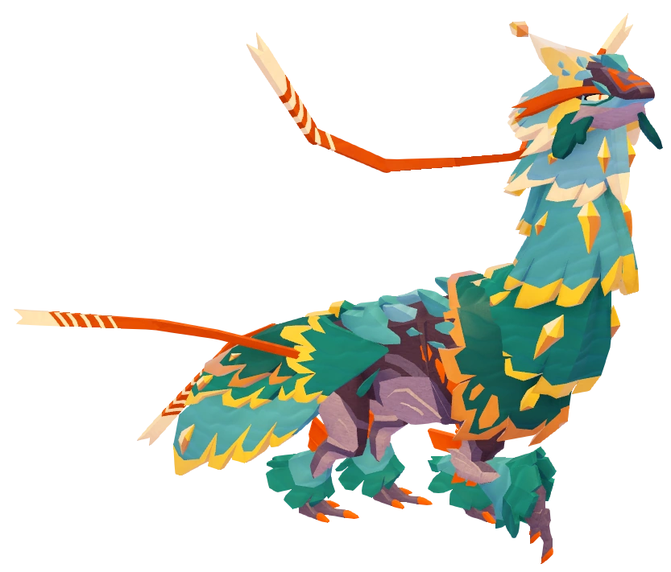
Coniferon cuenta con un bloqueo de sangrado, congelación, y veneno. En la parte defensiva, coloca únicamente sangrado.
En la parte de habilidades, Coniferon cuenta con Cazador Sanador, Emboscada, y Agarrar. En la parte pasiva, cuenta con Observador Ávido, Ciclo de Día/Noche, y Vigilante de Crías.
Ver datos aparte
Salud: 5500
Daño: 170
Curación: 160
Bite Cooldown: 0.8
Peso: 4400
Equenix
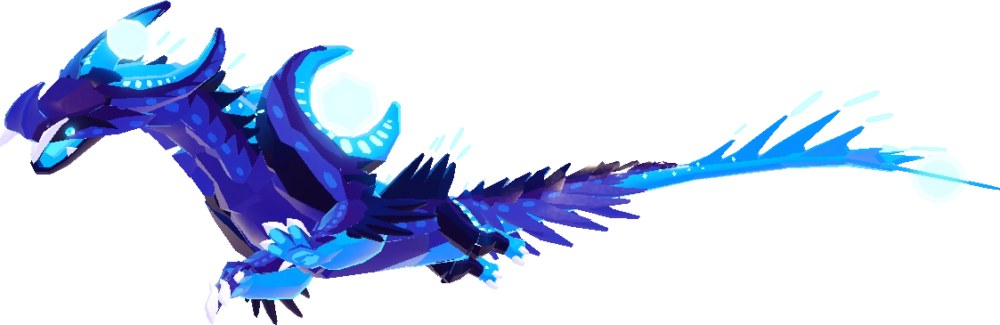
Equenix cuenta con un único bloqueo de sangrado. Por ataque, coloca únicamente herida.
En la parte de habilidades, Equenix cuenta con Cazador Sanador, Aliento de Curación, Impulso, Agarrar, y Charco de Lodo. En la parte pasiva, cuenta con Vigilante de Crías, y Nadador Ágil.
Ver datos aparte
Salud: 7350
Daño: 250
Curación: 60
Bite Cooldown: 1
Peso: 5700
Fleuralis
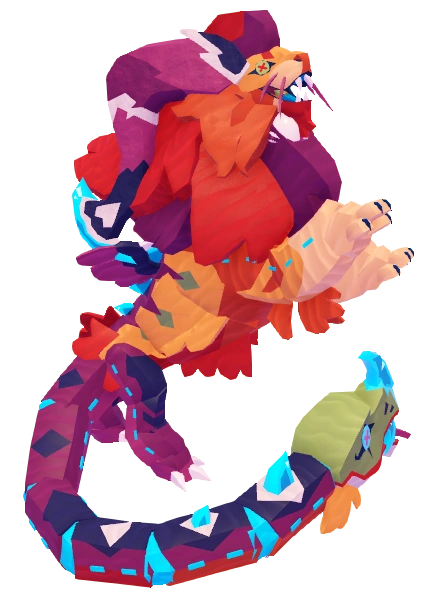
Fleuralis cuenta con un bloqueo de sangrado, herida, y radiación. En la parte defensiva, coloca únicamente veneno. Por ataque, coloca congelación, y sangrado.
En la parte de habilidades, Fleuralis cuenta con Área de Somnolencia, Agarrar, Aliento Embrujado, Saltar, Látigo Cola, y Resentimiento Negativo. En la parte pasiva, cuenta con Aterrizaje Suave, Carga Launch, Ladrón de Huevos, Sanador de Manada, e Inquebrantable.
Ver datos aparte
Salud: 7000
Daño: 200
Bite Cooldown: 0.8
Peso: 3800
Tier 5
Eldervaine
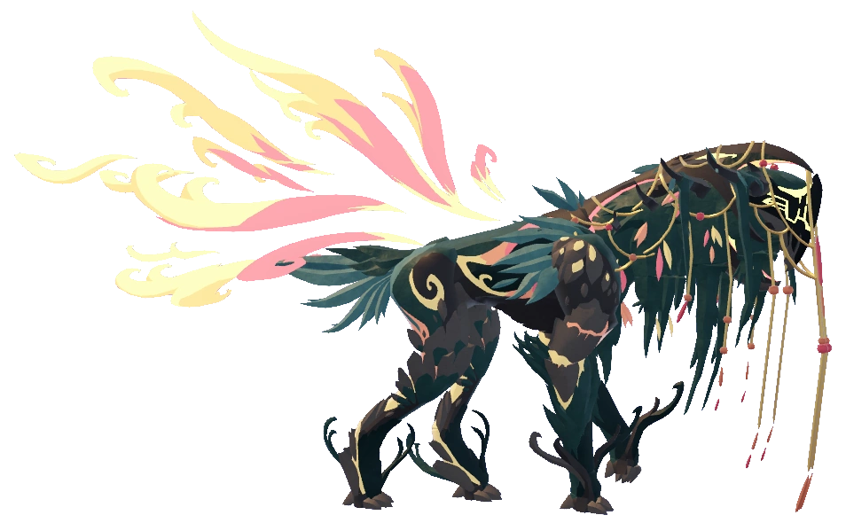
Eldervaine cuenta con un bloqueo de sangrado, quemadura, congelación, y herida. En la parte defensiva, coloca herida, y enfermedad.
En la parte de habilidades, Eldervaine cuenta con Cazador Sanador, Aliento de Curación, Fortificar, y Trampa de Espinas. En la parte pasiva, cuenta con La Unión Hace la Fuerza, Sanador de Manada, y Paso Curativo.
Ver datos aparte
Salud: 10000
Daño: 350
Curación: 75
Bite Cooldown: 1.2
Peso: 32000
Opralegion
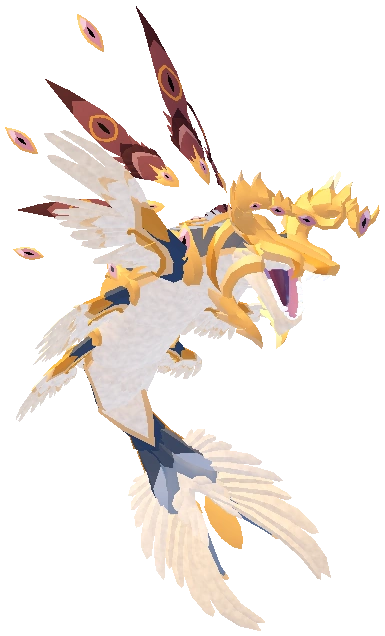
Opralegion cuenta con un bloqueo de sangrado, quemadura, congelación, herida, y veneno. En la parte defensiva, coloca únicamente sangrado.
En la parte de habilidades, Opralegion cuenta con Impulso, Provocar Miedo, Agarrar, Aliento Solar, y Cazador Sanador. En la parte pasiva, cuenta con Buceador, y Observador Ávido.
Ver datos aparte
Salud: 10500
Daño: 175
Curación: 140
Bite Cooldown: 1.4
Peso: 11250
Taburúún
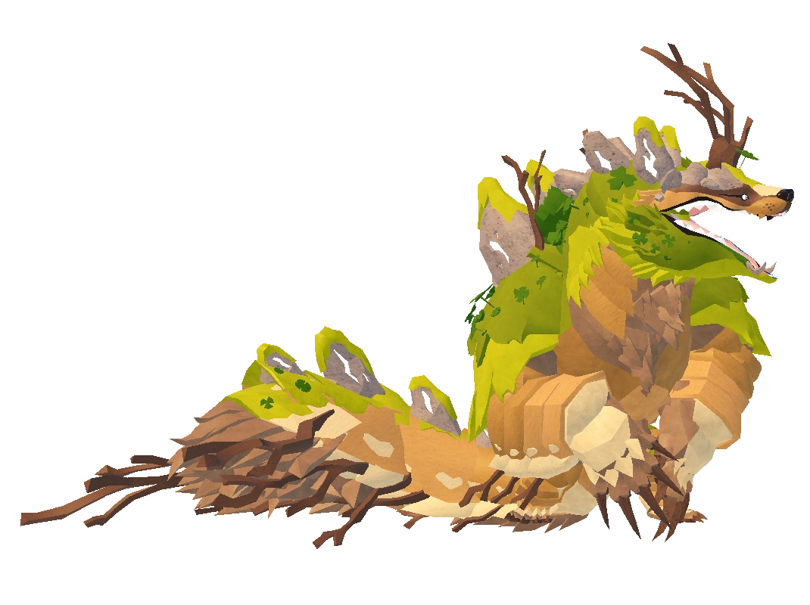
Taburúún cuenta con un bloqueo de sangrado, herida, y veneno. En la parte defensiva, coloca únicamente herida. Por ataque, coloca sangrado, y alas desmenuzadas.
En la parte de habilidades, Taburúún cuenta con Mal Presagio, Fortificar, y Cazador Sanador.
Ver datos aparte
Salud: 7000
Daño: 370
Curación: 80
Bite Cooldown: 1
Peso: 9700